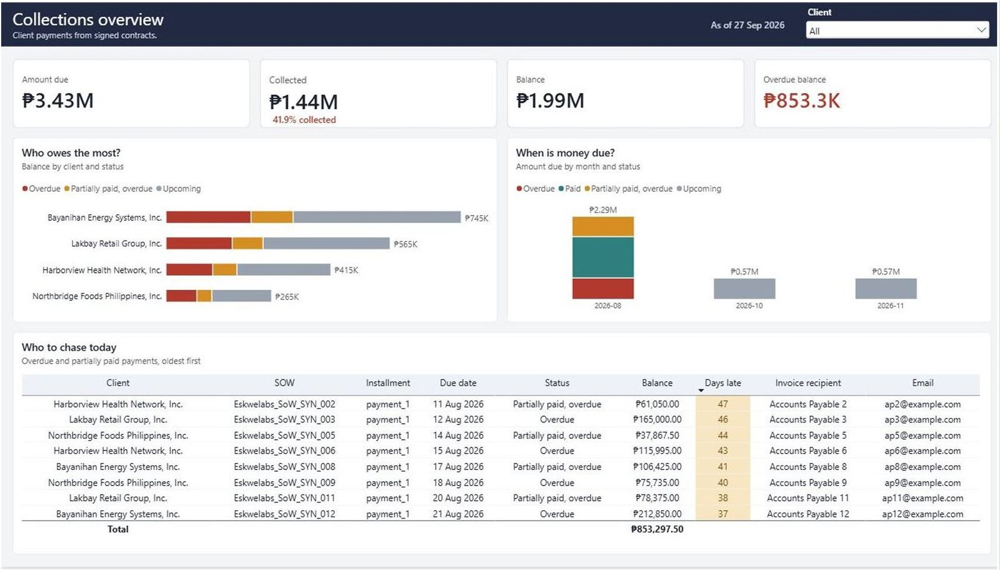
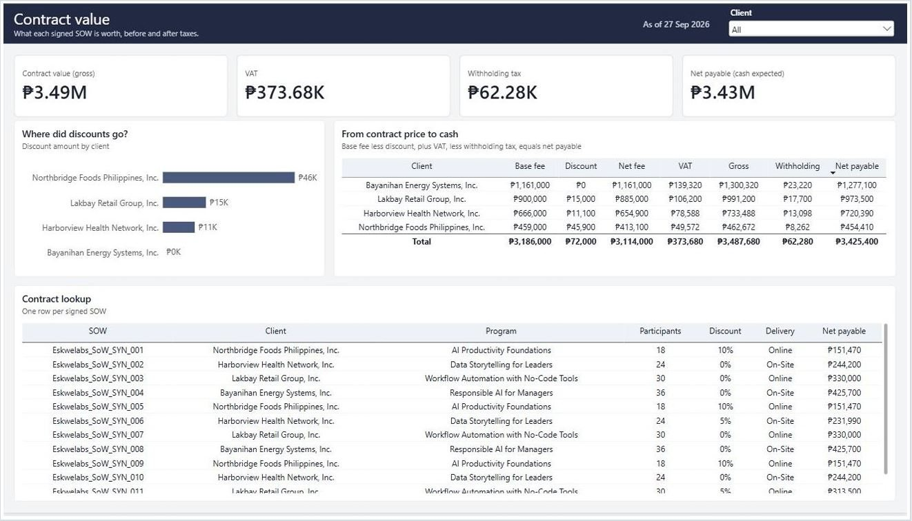

Collections reporting pipeline
An ELT pipeline that loads signed client contracts into PostgreSQL, validates them, and feeds a Power BI collections dashboard and an automated weekly email for a Collections Lead.
- Team
- Solo project; bootcamp capstone assigned by Eskwelabs.
- My contribution
- I built the entire solution: the ELT pipeline in Python and SQL, the data-quality checks, the reporting views, the two-page Power BI dashboard and the automated weekly email.
- AI assistance
- Following the bootcamp's approach, I used AI tools to help write the code, and reviewed and tested it myself.
- Tools
- Python in Google Colab, PostgreSQL on Supabase, Power BI, and Gmail through Python's smtplib.
- Data
- 12 synthetic signed statements of work provided by the bootcamp (74 columns, 4 client companies, 324 learners). Client payments are synthetic demo data, generated with my mentor's approval.
Business question
The brief was to take client contract data, prepare it for storage, and build automated reporting on top of it. The intended user is a Collections Lead, who needs to answer five questions:
- How much is each client scheduled to pay, and on what dates?
- How much falls due each month, including the next 30 days?
- Which payments are overdue, and which clients should be contacted first?
- How much contract value was given away as discounts?
- How much of each contract goes to VAT and withholding tax, and how much cash is actually received?
Approach
- Loaded the source spreadsheet unchanged into a
rawschema, so any later step can be corrected and rerun without extracting the data again. - Built a staging view that renames and types each field, and tested five business rules before any data reached the core tables: withholding tax equals 2% of the net fee; net payable equals gross less withholding tax; VAT equals the net fee multiplied by the VAT rate; installment percentages total 100%; and every second installment has a due date. All 12 contracts passed.
- Loaded the contracts into the data architecture provided by the bootcamp, linking clients and signers, projects, contract versions, 180 contract terms and 20 payment obligations.
- Generated synthetic payments so the dashboard could display every payment status, then built two reporting views: one row per installment and one row per contract.
- Connected Power BI to these views and generated the weekly email from the same view, so the dashboard and the email always report the same figures.
- Added 18 automated checks on row counts and peso totals at the end of every run. Rerunning the pipeline neither duplicates nor changes data.
Dashboard
Two Power BI pages, connected to the reporting views and refreshed whenever new contracts are loaded. Select a page to open it at full size.




Key figures
- Amount owed
- ₱3,425,400
- Collected (synthetic payments)
- ₱1,435,087.50
- Overdue under the original due dates
- ₱853,297.50
- Discounts granted
- ₱72,000
- Automated checks passed per run
- 18 of 18
Findings
- The source due dates conflict with the program schedule. In all 12 contracts, the first installment falls due on the signing date, before the program has started. Following my mentor's guidance that payment should follow program completion, I kept the original dates and added adjusted dates: the program end date plus 30 days, which is the contracts' own payment term.
- The choice of due date determines what is overdue. Under the original dates, ₱853,297.50 is overdue. Under the adjusted dates, nothing falls due before 10 October 2026. The business would need to confirm which dates are binding before contacting clients.
- Discounts are concentrated in one client. 64% of all discounts (₱45,900 of ₱72,000) went to a single client, while another received none. This warrants review when future proposals are priced.
Limitations and next steps
- Client payments are synthetic. The next step would be to load actual payment records.
- The contract template supports at most two installments. The pipeline should create one obligation per installment, however many there are.
- The pipeline is run manually in Google Colab. A scheduled weekly run, for example with GitHub Actions, is the natural next step.
- Only signed contracts are loaded. Proposals could be added as expected revenue.
Code
The notebook, the Power BI file and the source spreadsheet are not published, because the pipeline is built on the bootcamp's own data architecture. I am happy to walk through the code in an interview.